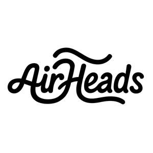

Trade Mark Journal No.2025/039 26 September 2025
UK00004252041 20 August 2025 (3,8,11,18,21,24,25,26,35)

- Class 3
- Non-medicated cosmetics and toiletry preparations; toiletries; toiletry preparations; Non-medicated hair shampoos ; hair shampoos; hair texturizers; hair conditioner; hair mousse; hair cosmetics; hair rinses; hair serums; baby hair conditioner; hair styling spray; hair chalks; hair pomades; hair relaxers; hair emollients; hair lotion; hair balms; hair gel; hair nourishers; detanglers; parts and fittings for the aforesaid.
- Class 8
- Hand tools and implements, hand-operated; hair styling appliances ; electric hair straighteners; electric hair crimpers; hair curling irons; hair straightening irons; electric hair clippers; hair clippers for babies; electric hair braiders; parts and fittings for the aforesaid.
- Class 11
- Hair drying appliances ; electric hair dryers; hair dryers [for household purposes]; hair driers for children; hair driers for use in beauty salons; hand-held electric hair dryers; holders adapted for hair dryers; parts and fittings for the aforesaid. .
- Class 18
- Leather and imitations of leather; animal skins and hides; luggage and carrying bags; cases of imitation leather ; carrying cases; toiletry bags; carrying bags for hair dryers; wash bags for carrying toiletries; parts and fittings for the aforesaid.
- Class 21
- Hair brushes; hair combs; shampoo brush; electric hair combs; parts and fittings for the aforesaid.
- Class 24
- Turban towels for drying hair; textile hair drying towels; bath wrap towels; parts and fittings for the aforesaid.
- Class 25
- Shower caps; headwear; turbans; bathrobes; beach robes; lounging robes; slippers; bath slippers; spa slippers; spa sandals; beach sandals; pedicure slippers; parts and fittings for the aforesaid.
- Class 26
- Hair decorations; hair ornaments, hair rollers, hair fastening articles, and false hair; hair scrunchies; hair barrettes; hair twisters [hair accessories] ; hair clips; hair curling clip; hair bows; hair extensions; hair ribbons; hair rollers; hair bands; hair elastics; hair pins; hair curlers; hair fasteners; parts and fittings for the aforesaid.
- Class 35
- Retail services relating to the sale of non-medicated cosmetics and toiletry preparations, toiletries, toiletry preparations, non-medicated hair shampoos , hair shampoos, hair texturizers, hair conditioner, hair mousse, hair cosmetics, hair rinses, hair serums, baby hair conditioner, hair styling spray, hair chalks, hair pomades, hair relaxers, hair emollients, hair lotion, hair balms, hair gel, hair nourishers, detanglers, hand tools and implements, hand-operated, hair styling appliances, electric hair straighteners, electric hair crimpers, hair curling irons, hair straightening irons, electric hair clippers, hair clippers for babies, electric hair braiders, hair drying appliances, electric hair dryers, hair dryers [for household purposes], hair driers for children, hair driers for use in beauty salons, hand-held electric hair dryers, holders adapted for hair dryers, leather and imitations of leather, animal skins and hides, luggage and carrying bags, cases of imitation leather, carrying cases, toiletry bags, carrying bags for hair dryers, wash bags for carrying toiletries, hair brushes, hair combs, shampoo brush, electric hair combs, turban towels for drying hair, textile hair drying towels, bath wrap towels, shower caps, headwear, turbans, bathrobes, beach robes, lounging robes, slippers, bath slippers, spa slippers, spa sandals, beach sandals, pedicure slippers, hair decorations, hair ornaments, hair rollers, hair fastening articles, and false hair, hair scrunchies, hair barrettes, hair twisters [hair accessories], hair clips, hair curling clip, hair bows, hair extensions, hair ribbons, hair rollers, hair bands, hair elastics, hair pins, hair curlers, hair fasteners, parts and fittings therefor, all of the aforesaid provided via both retail stores and an electronic retailing Internet site; mail order retail services relating to the sale of non-medicated cosmetics and toiletry preparations, toiletries, toiletry preparations, non-medicated hair shampoos , hair shampoos, hair texturizers, hair conditioner, hair mousse, hair cosmetics, hair rinses, hair serums, baby hair conditioner, hair styling spray, hair chalks, hair pomades, hair relaxers, hair emollients, hair lotion, hair balms, hair gel, hair nourishers, detanglers, hand tools and implements, hand-operated, hair styling appliances, electric hair straighteners, electric hair crimpers, hair curling irons, hair straightening irons, electric hair clippers, hair clippers for babies, electric hair braiders, hair drying appliances, electric hair dryers, hair dryers [for household purposes], hair driers for children, hair driers for use in beauty salons, hand-held electric hair dryers, holders adapted for hair dryers, leather and imitations of leather, animal skins and hides, luggage and carrying bags, cases of imitation leather, carrying cases, toiletry bags, carrying bags for hair dryers, wash bags for carrying toiletries, hair brushes, hair combs, shampoo brush, electric hair combs, turban towels for drying hair, textile hair drying towels, bath wrap towels, shower caps, headwear, turbans, bathrobes, beach robes, lounging robes, slippers, bath slippers, spa slippers, spa sandals, beach sandals, pedicure slippers , hair decorations, hair ornaments, hair rollers, hair fastening articles, and false hair, hair scrunchies, hair barrettes, hair twisters [hair accessories], hair clips, hair curling clip, hair bows, hair extensions, hair ribbons, hair rollers, hair bands, hair elastics, hair pins, hair curlers, hair fasteners, parts and fittings therefor; wholesale services relating to non-medicated cosmetics and toiletry preparations, toiletries, toiletry preparations, non-medicated hair shampoos , hair shampoos, hair texturizers, hair conditioner, hair mousse, hair cosmetics, hair rinses, hair serums, baby hair conditioner, hair styling spray, hair chalks, hair pomades, hair relaxers, hair emollients, hair lotion, hair balms, hair gel, hair nourishers, detanglers, hand tools and implements, hand-operated, hair styling appliances, electric hair straighteners, electric hair crimpers, hair curling irons, hair straightening irons, electric hair clippers, hair clippers for babies, electric hair braiders, hair drying appliances, electric hair dryers, hair dryers [for household purposes], hair driers for children, hair driers for use in beauty salons, hand-held electric hair dryers, holders adapted for hair dryers, leather and imitations of leather, animal skins and hides, luggage and carrying bags, cases of imitation leather, carrying cases, toiletry bags, carrying bags for hair dryers, wash bags for carrying toiletries, hair brushes, hair combs, shampoo brush, electric hair combs, turban towels for drying hair, textile hair drying towels, bath wrap towels, shower caps, headwear, turbans, bathrobes, beach robes, lounging robes, slippers, bath slippers, spa slippers, spa sandals, beach sandals, pedicure slippers , hair decorations, hair ornaments, hair rollers, hair fastening articles, and false hair, hair scrunchies, hair barrettes, hair twisters [hair accessories], hair clips, hair curling clip, hair bows, hair extensions, hair ribbons, hair rollers, hair bands, hair elastics, hair pins, hair curlers, hair fasteners, parts and fittings therefor, all of the aforesaid provided via the telephone; information, advice and consultancy relating to the aforesaid. .
Hall & Associates (Marketing) Ltd
Representative: BRANDED TM LIMITED T/A BRANDED!